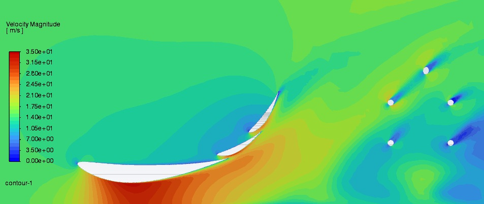
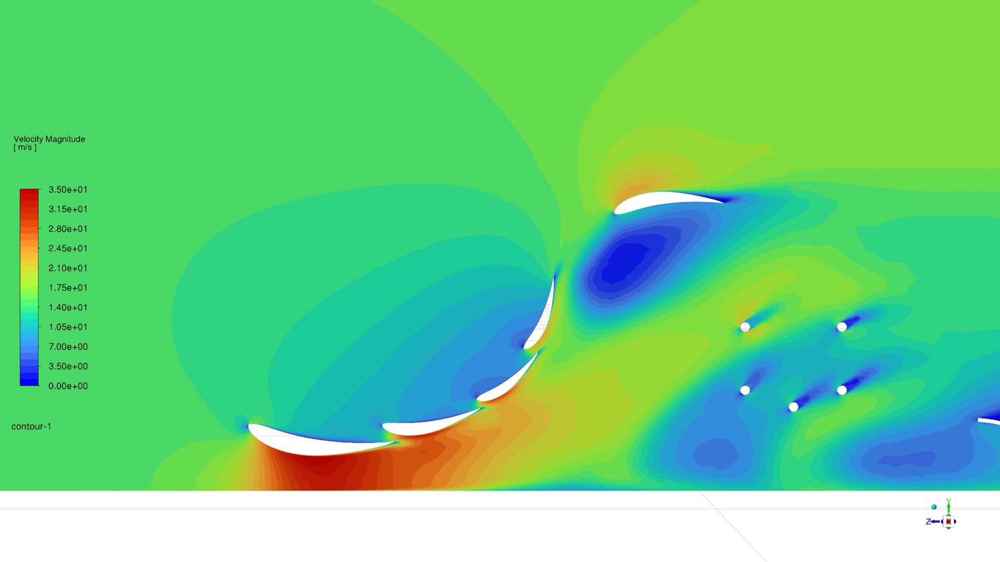
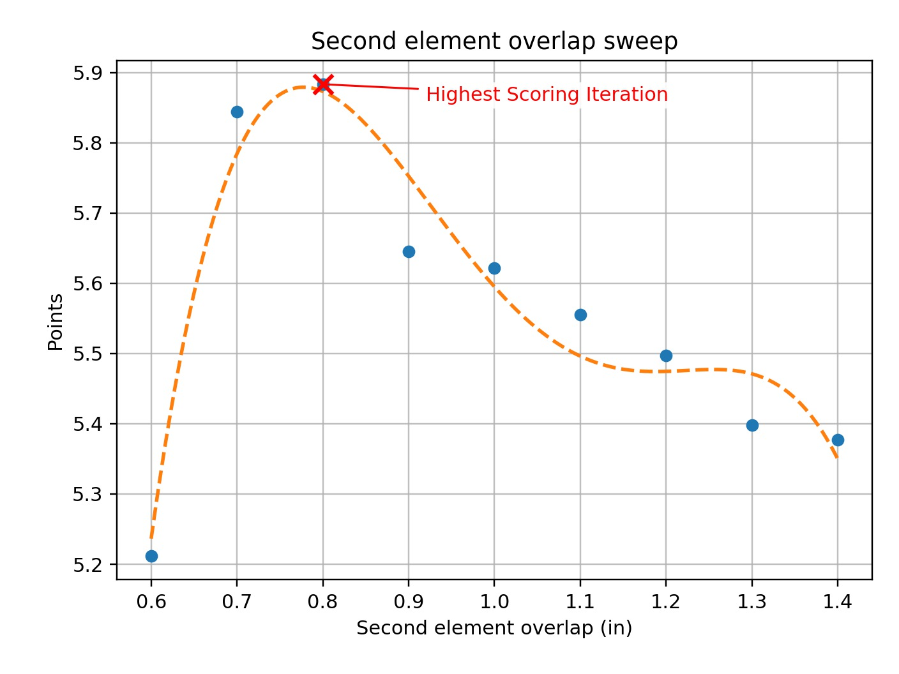
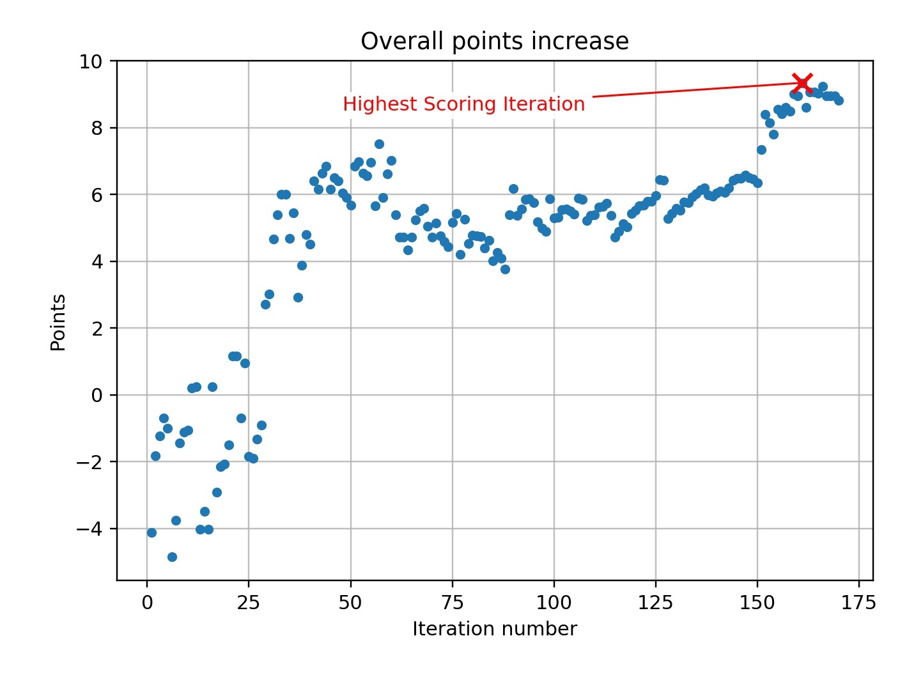
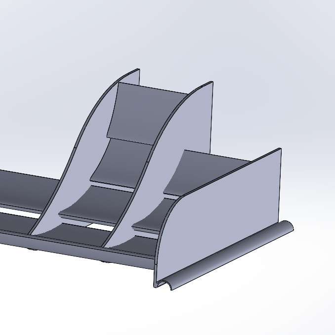
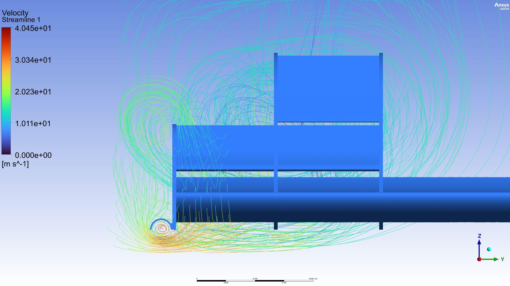

Splitting the main element
I chose Eppler 423 for its greater camber and downforce potential within the available wing space. In the three-element arrangement, though, the main element separated earlier. The flow near the surface had to work against the pressure rise toward the trailing edge, and it could no longer stay attached under that loading.
I split the main element to distribute the turning and pressure recovery across two surfaces. That brought the wing to four elements and gave me another slot and another element angle to adjust. The slot changes the flow reaching the next leading edge, where a new boundary layer develops. I could then tune the loading of each section instead of asking one long main element to carry it all.


Parameter sweeps
I swept chord, angle of attack, slot gap, and overlap because they change different parts of the flow. Chord distributes area between the elements; angle changes how heavily each one is loaded; gap and overlap set the passage between them. A small gap can restrict that passage, while a larger one changes the interaction with the next element. I adjusted the settings together because the best angle depends on the slot feeding that surface.
For each iteration, I compared downforce and drag, then inspected the flow field for separation. I also tracked the lap-model points estimate so I could judge whether the extra downforce justified its drag cost. The plots below show the overlap study and the points estimate across the iterations.


Curved footplates
I added footplates with a 1.5-inch outer diameter along the outer endplates to protect the low-pressure suction zone beneath the wing. Higher-pressure air outside the endplate tends to spill around its lower edge into that zone. If that crossflow raises the pressure underneath, the pressure difference across the wing falls and downforce is lost.
The curved footplate turns the edge flow and encourages it to roll into a rotating vortex that travels downstream along the wing’s outer edge. The vortex acts as a partial aerodynamic seal: its circulating flow limits how much outside air can move inward beneath the wing. Keeping that leakage near the edge helps preserve suction farther inboard. The low-pressure vortex core can also increase suction locally.
I used the streamline view below to inspect the roll-up around the footplate, and compared the force results against the previous footplates. The curved version added 18 N of downforce in the isolated-wing CFD comparison. That increase was why I kept it.


Results and aerodynamic balance
At 0° pitch and a 1.75-inch ride height, the isolated half-wing produced 149.9 N of downforce in CFD. Relative to the baseline, ClA increased by 0.306 and CdA by 0.058. The lap model predicted a gain of 9.23 points from that trade between downforce and drag.
I then checked the front load against the whole aerodynamic package. At 35 mph, the half-car simulation put 61.04% of the downforce at the front, above the 50 ± 5% target. Further front-wing load would worsen that balance. Reducing the final element or its angle, and improving flow to the rear wing, became the next options to investigate.